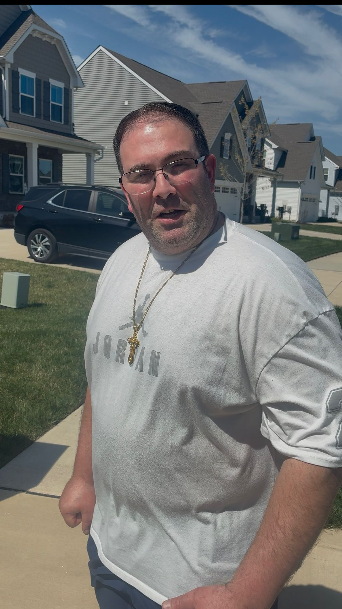

iPhone Screen Repair
Cracked screens, touch problems, and display issues for common iPhone models.
Milton customers can call Fix & Chill for mobile phone repair that comes to the customer. We help with cracked iPhone screens, Samsung repair, battery replacement, charging port repair, iPad repair throughout nearby Eastern Shore communities.

Cracked screens, touch problems, and display issues for common iPhone models.
Battery service for phones and tablets that drain quickly or shut off unexpectedly.
Help for devices that will not charge, connect loosely, or need port cleaning or repair.
Samsung Galaxy screen, battery, charging, and general repair support.
Tablet screen replacement, charging issues, and common iPad repair needs.
We also serve nearby Lewes, Milford, Georgetown, Rehoboth Beach, and Delaware beach areas. Milton is a strong fit for mobile repair because many customers prefer quick service at home or work.
For details about parts, warranty, and repair options, visit our repair services, warranty information, or return to the Fix & Chill homepage.